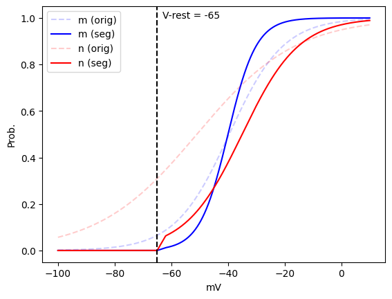
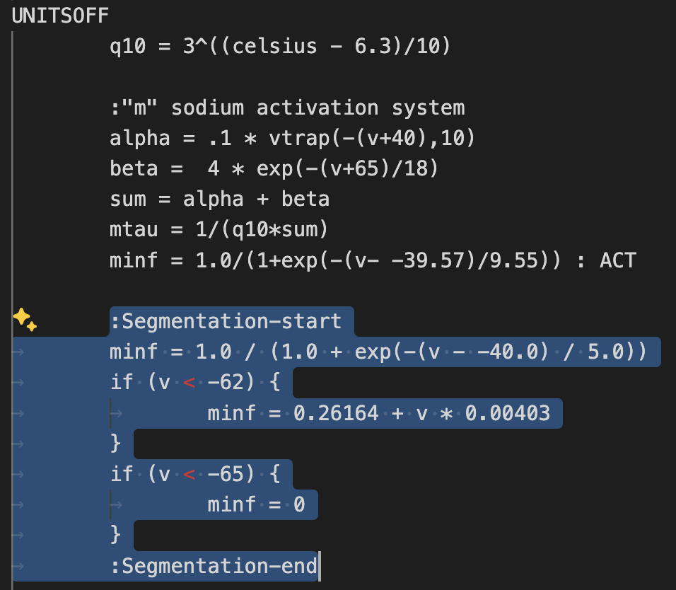
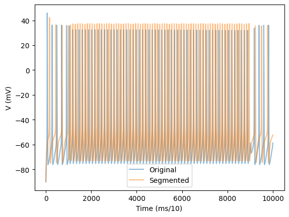
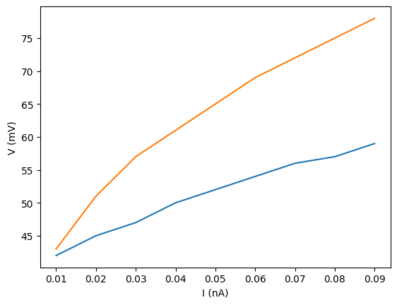

Segmentation#
Note that for this example we assume the passive properties of the cell are known and do not need to be estimated.
import sys
sys.path.append("../")
import numpy as np
import matplotlib.pyplot as plt
import act.modfiles
from act.segmentation import ACTSegmenter
from act.simulator import ACTSimulator
from act.cell_model import ACTCellModel
from act.data_processing import find_events
from act.types import SimulationParameters, ConstantCurrentInjection
libnrniv.dylib running as arm64
but /usr/local/lib/libmpi.dylib can only run as x86_64
Define the channels based on the modfile#
We first define modfiles as python objects using the ACTModfile class.
Choose the channels for segmentation (Na, K).
For each channel:
Transfer the channel name (
channel_name), channel ion (ion), maximum conductance (gbar) and channel reversal potential (e) from the modfile.Define the channel’s state variables. Use
act.modfiles.StateVariablefor variables that do not need to be segmented (typically, inactivation functions) andact.modfiles.SegmentableStateVariablefor variables that need to be segmented.For each variable, Transfer the name (
name), the power of the variable in the conductance equation (power), \(V_{1/2}\) (vhalf) and \(k\) (k) from the modfile. Thetauparameter is not considered during segmentation and can be set toNone.For
SegmentableStateVariables, specify the bounds forvhalfandk. Note that we are not using the full biological range forvhalfof Na activation function to achieve a closer match between the original and segmented cell.
Na = act.modfiles.ACTModfile(
channel_name = "Na",
ion = "na",
gbar = 0.12,
e = 50,
state_variables = [
act.modfiles.SegmentableStateVariable(
name = "m",
power = 3, # m * m * m
vhalf = -39.57,
k = 9.55,
tau = None,
segmentation_vhalf_bounds = (-45, -40),
segmentation_k_bounds = (5, 10)
),
act.modfiles.StateVariable(
name = "h",
power = 1,
vhalf = -60,
k = -6,
tau = None,
)
]
)
K = act.modfiles.ACTModfile(
channel_name = "K",
ion = "k",
gbar = 0.036,
e = -77,
state_variables = [
act.modfiles.SegmentableStateVariable(
name = "n",
power = 4, # n * n * n * n
vhalf = -50.98,
k = 17.44,
tau = None,
segmentation_vhalf_bounds = (-55, -35),
segmentation_k_bounds = (10, 20)
)
]
)
Run ACTSegmenter#
# Assumed to be known in this example
V_rest = -65
The spiker model has only 2 modules: passive (voltages below \(V_{rest}\)) and spiking (voltages above \(V_{rest}\)). Consequently, in this case the threshold voltage is known and equal to \(V_{rest}\). We can use ACTSegmenter’s segment_v() function to segment at this threshold value.
segmenter = ACTSegmenter()
segmenter.segment_v(modfile_group = [Na, K], v_threshold = V_rest)
--------------------
Segmentation results
--------------------
Module voltage cutoff: -65 mV
Estimated parameters for activation functions:
Na(m): vhalf = -40.0 mV, k = 5.0 mV
K(n): vhalf = -35.0 mV, k = 10.0 mV
fig, ax = plt.subplots(1, 1)
ca = ax
v = np.linspace(-100, 10, 1000)
for var, var_color in zip([Na["m"], K["n"]], ["blue", "red"]):
ca.plot(v, var.activation_function(v), label = f"{var.name} (orig)", color = var_color, alpha = 0.2, ls = "--")
ca.plot(v, var.segmented_activation_function(v), label = f"{var.name} (seg)", color = var_color)
ca.set_xlabel("mV")
ca.set_ylabel("Prob.")
ca.axvline(V_rest, ls = "--", color = "black")
ca.text(V_rest + 2, 1.0, f"V-rest = {V_rest}")
ca.legend();

Update the modfile#
Defining modfiles as ACTModfile objects allows us to easily obtain the segmented activation functions as shown below.
print(Na.compose_segmented_activation_function(svar = Na["m"]))
:Segmentation-start
minf = 1.0 / (1.0 + exp(-(v - -40.0) / 5.0))
if (v < -62) {
minf = 0.26164 + v * 0.00403
}
if (v < -65) {
minf = 0
}
:Segmentation-end
print(K.compose_segmented_activation_function(svar = K["n"]))
:Segmentation-start
ninf = 1.0 / (1.0 + exp(-(v - -35.0) / 10.0))
if (v < -62) {
ninf = 1.36161 + v * 0.02095
}
if (v < -65) {
ninf = 0
}
:Segmentation-end
Copy the printouts into the modfiles/seg/hh_spiker.mod. E.g., for Na:

Simulate and compare#
Finally, we simulate from both the original and segmented cell and compare the voltage traces and the FI curve.
original_cell = ACTCellModel(
path_to_hoc_file = "./spiker/orig/template.hoc",
cell_name = "Spiker",
path_to_mod_files = "./spiker/orig/modfiles",
passive = ["gl_hh_spiker", -54.4, None],
active_channels = ["gnabar_hh_spiker", "gkbar_hh_spiker"]
)
segmented_cell = ACTCellModel(
path_to_hoc_file = "./spiker/seg/template.hoc",
cell_name = "Spiker",
path_to_mod_files = "./spiker/seg/modfiles",
passive = ["gl_hh_spiker", -54.4, None],
active_channels = ["gnabar_hh_spiker", "gkbar_hh_spiker"]
)
simulator = ACTSimulator()
I = [0.01, 0.02, 0.03, 0.04, 0.05, 0.06, 0.07, 0.08, 0.09]
for sim_idx, i_amp in enumerate(I):
simulator.submit_job(
original_cell,
SimulationParameters(
sim_idx = sim_idx,
sim_name = "spiker_orig",
h_celsius = 6.3,
h_v_init = -90,
h_tstop = 1000,
CI = [ConstantCurrentInjection(amp = i_amp, dur = 800, delay = 100)]
)
)
simulator.run_jobs()
ACTSimulator (2025)
----------
When submitting multiple jobs, note that the cells must share modfiles.
libnrniv.dylib running as arm64
but /usr/local/lib/libmpi.dylib can only run as x86_64
libnrniv.dylib running as arm64
but /usr/local/lib/libmpi.dylib can only run as x86_64
libnrniv.dylib running as arm64
but /usr/local/lib/libmpi.dylib can only run as x86_64
libnrniv.dylib running as arm64
but /usr/local/lib/libmpi.dylib can only run as x86_64
libnrniv.dylib running as arm64
but /usr/local/lib/libmpi.dylib can only run as x86_64
libnrniv.dylib running as arm64
libnrniv.dylib running as arm64
but /usr/local/lib/libmpi.dylib can only run as x86_64
but /usr/local/lib/libmpi.dylib can only run as x86_64
libnrniv.dylib running as arm64
but /usr/local/lib/libmpi.dylib can only run as x86_64
simulator = ACTSimulator()
I = [0.01, 0.02, 0.03, 0.04, 0.05, 0.06, 0.07, 0.08, 0.09]
for sim_idx, i_amp in enumerate(I):
simulator.submit_job(
segmented_cell,
SimulationParameters(
sim_idx = sim_idx,
sim_name = "spiker_seg",
h_celsius = 6.3,
h_v_init = -90,
h_tstop = 1000,
CI = [ConstantCurrentInjection(amp = i_amp, dur = 800, delay = 100)]
)
)
simulator.run_jobs()
ACTSimulator (2025)
----------
When submitting multiple jobs, note that the cells must share modfiles.
libnrniv.dylib running as arm64
but /usr/local/lib/libmpi.dylib can only run as x86_64
libnrniv.dylib running as arm64
but /usr/local/lib/libmpi.dylib can only run as x86_64
libnrniv.dylib running as arm64
but /usr/local/lib/libmpi.dylib can only run as x86_64
libnrniv.dylib running as arm64
but /usr/local/lib/libmpi.dylib can only run as x86_64
libnrniv.dylib running as arm64
but /usr/local/lib/libmpi.dylib can only run as x86_64
libnrniv.dylib running as arm64
but /usr/local/lib/libmpi.dylib can only run as x86_64
libnrniv.dylib running as arm64
but /usr/local/lib/libmpi.dylib can only run as x86_64
libnrniv.dylib running as arm64
but /usr/local/lib/libmpi.dylib can only run as x86_64
# Read the data
v_orig = np.load("spiker_orig/out_7.npy")[:, 0]
v_seg = np.load("spiker_seg/out_7.npy")[:, 0]
fig, ax = plt.subplots(1, 1)
ca = ax
T = range(len(v_orig))
ca.plot(T, v_orig, alpha = 0.5, label = "Original")
ca.plot(T, v_seg, alpha = 0.5, label = "Segmented")
ca.set_xlabel("Time (ms/10)")
ca.set_ylabel("V (mV)")
ca.legend();

f_orig = []
f_seg = []
for sim_idx in range(len(I)):
f_orig.append(len(find_events(np.load(f"spiker_orig/out_{sim_idx}.npy")[1000:9000, 0], 0)))
f_seg.append(len(find_events(np.load(f"spiker_seg/out_{sim_idx}.npy")[1000:9000, 0], 0)))
plt.plot(I, f_orig, label = "Original")
plt.plot(I, f_seg, label = "Segmented")
plt.xlabel("I (nA)")
plt.ylabel("V (mV)")
Text(0, 0.5, 'V (mV)')

As we can see, although a particular trace matches fairly closely, the FI curve for the segmented cell is off. This is expected, since we adjusted \(V_{1/2}\) and \(k\), and these changes need to be compensated by adjusting conductances.